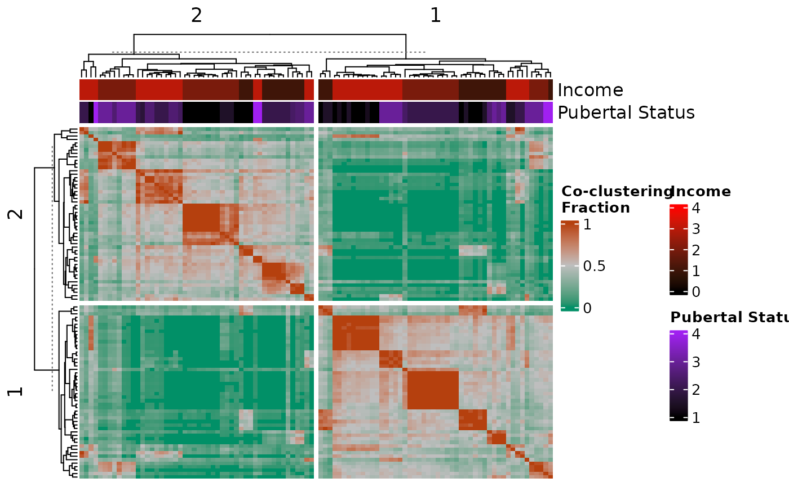

Heatmap of observation co-clustering across resampled data
Source:R/coclustering.R
cocluster_heatmap.RdCreate a heatmap that shows the distribution of observation co-clustering across resampled data.
Usage
cocluster_heatmap(
cocluster_df,
cluster_rows = TRUE,
cluster_columns = TRUE,
show_row_names = FALSE,
show_column_names = FALSE,
dl = NULL,
data = NULL,
left_bar = NULL,
right_bar = NULL,
top_bar = NULL,
bottom_bar = NULL,
left_hm = NULL,
right_hm = NULL,
top_hm = NULL,
bottom_hm = NULL,
annotation_colours = NULL,
min_colour = NULL,
max_colour = NULL,
...
)Arguments
- cocluster_df
A data frame containing co-clustering data for a single cluster solution. This object is generated by the
calculate_coclusteringfunction.- cluster_rows
Argument passed to
ComplexHeatmap::Heatmap().- cluster_columns
Argument passed to
ComplexHeatmap::Heatmap().- show_row_names
Argument passed to
ComplexHeatmap::Heatmap().- show_column_names
Argument passed to
ComplexHeatmap::Heatmap().- dl
See ?similarity_matrix_heatmap.
- data
See ?similarity_matrix_heatmap.
- left_bar
See ?similarity_matrix_heatmap.
- right_bar
See ?similarity_matrix_heatmap.
- top_bar
See ?similarity_matrix_heatmap.
- bottom_bar
See ?similarity_matrix_heatmap.
- left_hm
See ?similarity_matrix_heatmap.
- right_hm
See ?similarity_matrix_heatmap.
- top_hm
See ?similarity_matrix_heatmap.
- bottom_hm
See ?similarity_matrix_heatmap.
- annotation_colours
See ?similarity_matrix_heatmap.
- min_colour
See ?similarity_matrix_heatmap.
- max_colour
See ?similarity_matrix_heatmap.
- ...
Arguments passed to
ComplexHeatmap::Heatmap().
Value
Heatmap (class "Heatmap" from ComplexHeatmap) object showing the distribution of observation co-clustering across resampled data.
Examples
# \donttest{
my_dl <- data_list(
list(subc_v, "subcortical_volume", "neuroimaging", "continuous"),
list(income, "household_income", "demographics", "continuous"),
list(pubertal, "pubertal_status", "demographics", "continuous"),
uid = "unique_id"
)
#> ℹ 175 observations dropped due to incomplete data.
sc <- snf_config(my_dl, n_solutions = 5, max_k = 40)
#> ℹ No distance functions specified. Using defaults.
#> ℹ No clustering functions specified. Using defaults.
sol_df <- batch_snf(my_dl, sc)
my_dl_subsamples <- subsample_dl(
my_dl,
n_subsamples = 20,
subsample_fraction = 0.85
)
batch_subsample_results <- batch_snf_subsamples(
my_dl_subsamples,
sc
)
coclustering_results <- calculate_coclustering(
batch_subsample_results,
sol_df,
verbose = TRUE
)
#> Processing solution 1/5
#> Processing solution 2/5
#> Processing solution 3/5
#> Processing solution 4/5
#> Processing solution 5/5
cocluster_dfs <- coclustering_results$"cocluster_dfs"
cocluster_heatmap(
cocluster_dfs[[1]],
dl = my_dl,
top_hm = list(
"Income" = "household_income",
"Pubertal Status" = "pubertal_status"
),
annotation_colours = list(
"Pubertal Status" = colour_scale(
c(1, 4),
min_colour = "black",
max_colour = "purple"
),
"Income" = colour_scale(
c(0, 4),
min_colour = "black",
max_colour = "red"
)
)
)

# }